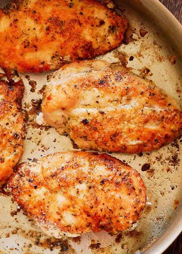

Seared Chicken

This method is not intended for gourmet style
cooking but instead targeted towards the
college students who need a quick and
delicious meal with little to no preparation
time. While preferably, we would want it grilled but let's be honest, who has a grill in college. Instead we will be using a pan. It will be a simple recipe but I will go into the nuances of handling chicken to prevent food poisoning. If this is your first time cooking, don't worry! This instruction set will guide you step by step.
Ingredients
- Bonless Chicken thigh or breask
- Salt
- Vegetable Oil
- Black Pepper Flakes
Method
-
PICKING THE RIGHT CHICKEN. Cooking different parts of the chicken requires subtle differences in handling and cooking. Whether you choose chicken thigh or chicken breast is your preference. While chicken breasts are leaner, chicken thighs are more juicy.
-
PREPPING THE CHICKEN. If your chicken is in the fridge, make sure to thaw it in the refrigerator the night before. However, if you forgot to put it in the fridge, you can thaw the chicken in cold water a few hours before cooking. However, make sure the chicken is sealed when submerged in water to prevent SALMONELA from spreading on the kitchen sink or wherever it was submerged in.
-
HANDLING THE CHICKEN. For this process, You will need a cutting board. When the chicken is tender, carefully lay the chicken on the board and dry it with paper towels. Then season the chicken with salt. You can add garlic powder or other seasonings of your preference.
-
Heat the pan and cover it in oil. Turn the stove to medium hot. When it is hot enough, slowly lay the chicken skin side( this allows the oil and juice from the fat to come out) down AWAY from your arm. This is important because if you lay the chicken towards you, the oil could potentially splatter on your arm and cause burns.
-
If you are cooking chicken breast, it is important that you flip only once to retain the juiciness of the chicken. Once you notice the chicken starts to get white towards the center from the bottom ( like in the picture to the right) which will take about 5 to 7 minutes, you can flip the chicken. You should see a beautiful golden brown. After flipping the chicken, let it cook for about 5 to 7 more minutes.
-
If you are cooking chicken thighs, you can flip multiple times but try to limit the amount of times you flip the chicken but the process is similar to chicken breast.
-
DONESS. Make sure the chicken is well cooked. If you have a food thermometer make sure it is cooked to 165 degrees fahrenheit. However, if you do not have one, it is usually cooked after flipping once and cooked for about 14 minutes. While the time may vary depending on the thawness of the chicken or the type of pot you are using. You can make sure by cutting the chicken and if it's white, then it is cooked. If it is still pink, put it back in the pan and continue cooking. After you finish cooking, remove the chicken from the pan and let it rest for 5 minutes before cutting or it will lose the juices in the chicken.